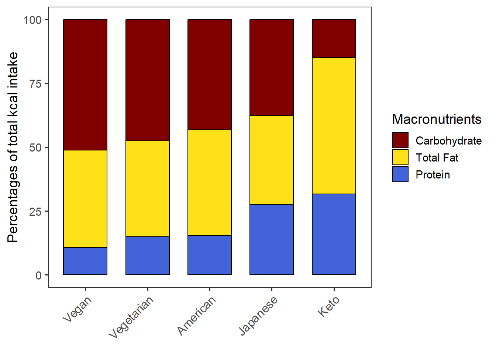
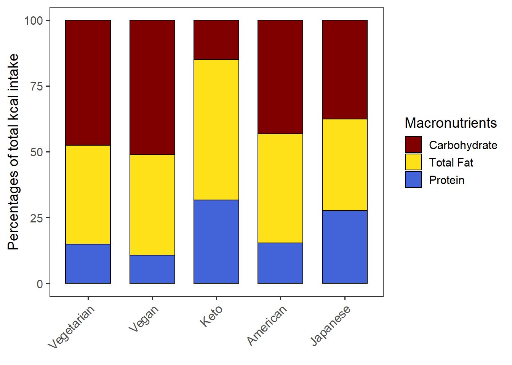
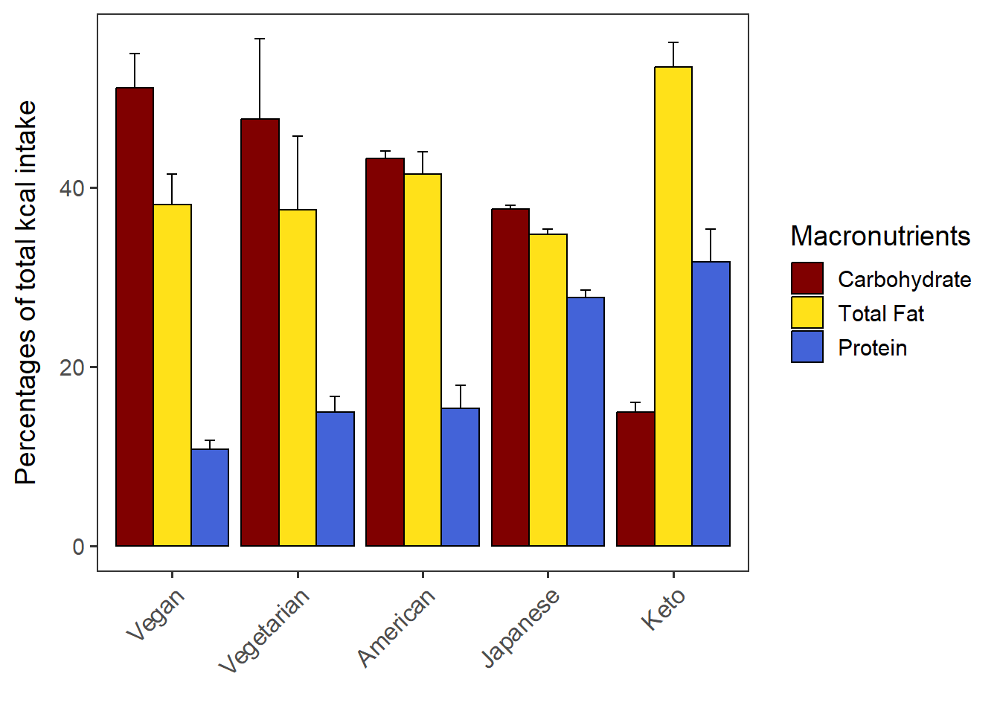
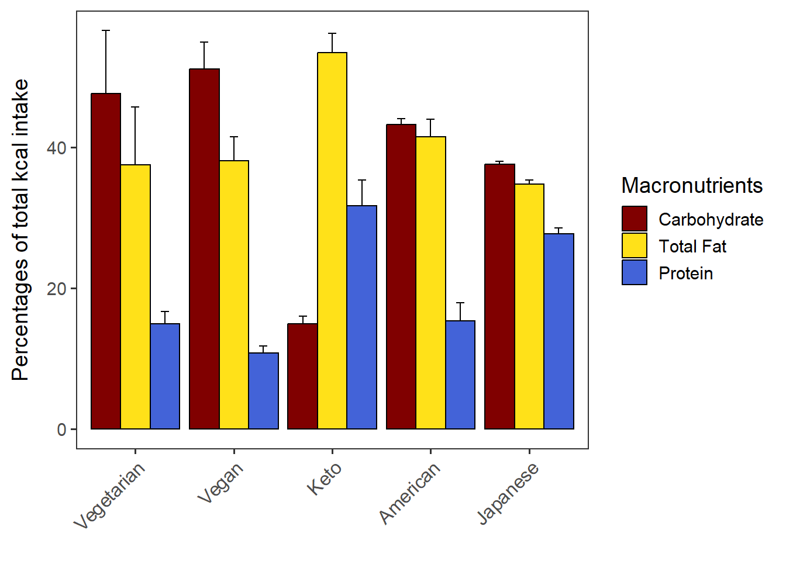
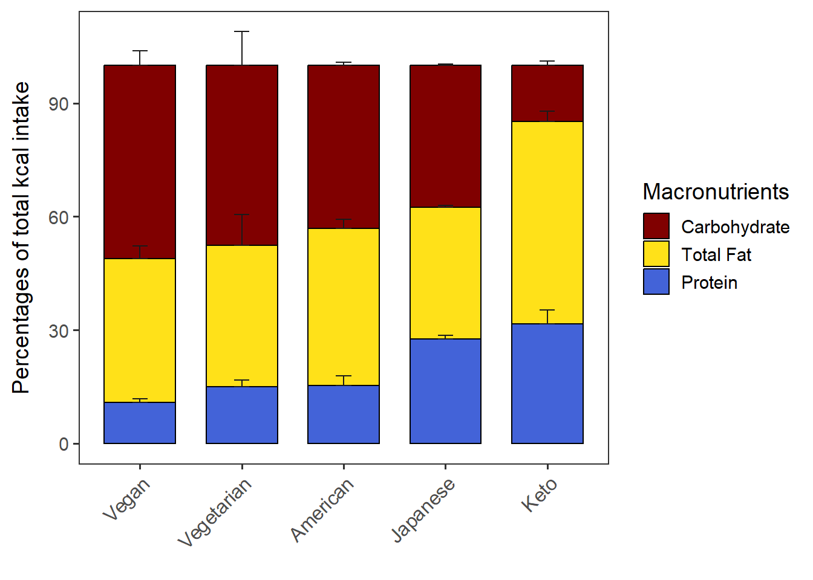
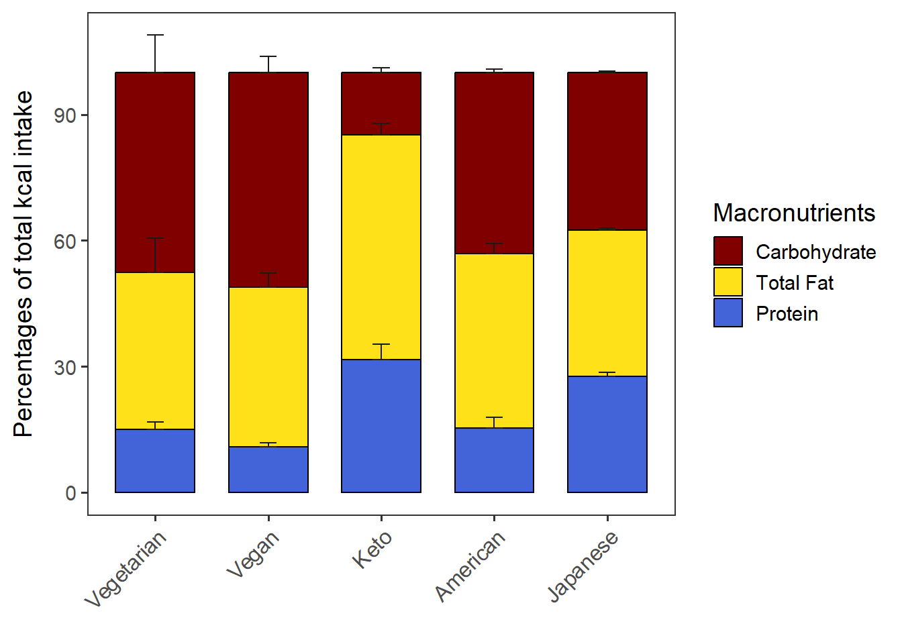

Percent kcal of CARB, PROT, TFAT
Introduction
We will calculate the percentage of calories from each of the three macronutrients in the sum of calories from the three macronutrients. Thus, the percentage of calories from CARB, PROT, and TFAT will add up to 100.
Load functions and packages
Name the path to DietDiveR directory where input files are pulled.
main_wd <- "~/GitHub/DietDiveR"Load the necessary functions.
source("lib/specify_data_dir.R")
source("lib/percent_kcal.R")
source("lib/ggplot2themes.R")Call color palette.
distinct100colors <- readRDS("lib/distinct100colors.rda")You can come back to the main directory by:
setwd(main_wd)Specify the directory where the data is.
SpecifyDataDirectory(directory.name= "eg_data/VVKAJ/")Import data from your data directory
Load the totals data.
totals <- read.table("VVKAJ_Tot_mean_m_QCed.txt", sep="\t", header=T)Calculate the percentage of calories from Carbohydrate, Protein, and Total Fat.
We will calculate the percentage of calories from each of the three macronutrients in the sum of calories from the three macronutrients. Thus, the percentage of calories from CARB, PROT, and TFAT will add up to 100.
Calculate the %KCAL of CARB, PROT, and TFAT for each user and take means by Group (Diet).
CPTpctKcalPerUser(inputfn=totals, group='Diet', across='UserName',
outfn="VVKAJ_Tot_mean_m_QCed_CPT_kcal.txt")Load the output.
CPT_kcal <- read.table("VVKAJ_Tot_mean_m_QCed_CPT_kcal.txt", sep="\t", header=T)CPT_kcal has Group, macronutrient, n, mean, and sd of each group.
Do not alter the column names of CPT_kcal in order to use the plotting functions in this script.
head(CPT_kcal)## Group macronutrient n mean sd
## 1 American Carbohydrate 3 43.19837 0.8099424
## 2 Japanese Carbohydrate 3 37.58174 0.3772045
## 3 Keto Carbohydrate 3 14.89899 1.1203633
## 4 Vegan Carbohydrate 3 51.12663 3.8075075
## 5 Vegetarian Carbohydrate 3 47.59644 8.9529930
## 6 American Protein 3 15.31603 2.5839341Generate a stacked barchart without SD
Order Diets by a certain macronutrient by the “order.by” argument.
You can also specify the stacking order of all the macronutrients by the “macronu.order” argument. Note that the last item will be on the bottom of the barchart.
PlotStackedwoSD(data=CPT_kcal,
order.by = "Protein",
macronut.order=c("Carbohydrate", "Total Fat", "Protein"))The chart is saved as “stacked_wo_SD”.
stacked_wo_SD
Save as a .pdf.
ggsave("VVKAJ_Tot_mean_m_QCed_CPT_kcal_wo_SD.pdf", stacked_wo_SD,
device="pdf", width=6.2, height=4.2, units="in")When order.by=“NULL”, the Diets (groups) will be in the alphabetical order by default. If you want to specify the group order, add the group.order argument.
PlotStackedwoSD(data=CPT_kcal,
order.by = "NULL",
macronut.order=c("Carbohydrate", "Total Fat", "Protein"),
group.order = c("Vegetarian", "Vegan", "Keto", "American", "Japanese")) stacked_wo_SD
Generate the “dodge”-type of barchart (3 bars per user, NOT STACKED).
Order Diets by a certain macronutrient by the “order.by” argument. You can also specify the plotting order of all the macronutrients by the “macronu.order” argument. Note that the first item will be the leftmost bar.
PlotDodged(data= CPT_kcal,
order.by = "Protein",
macronut.order=c("Carbohydrate", "Total Fat", "Protein"))dodged_w_SD
Save as a .pdf.
ggsave("VVKAJ_Tot_mean_m_QCed_CPT_kcal_dodged_w_SD.pdf", dodged_w_SD,
device="pdf", width=6, height=4.5, units="in")When order.by=“NULL”, the Diets (groups) will be in the alphabetical order by default. If you want to specify the group order, add the group.order argument.
PlotDodged(data= CPT_kcal,
order.by = "NULL",
macronut.order=c("Carbohydrate", "Total Fat", "Protein"),
group.order = c("Vegetarian", "Vegan", "Keto", "American", "Japanese"))dodged_w_SD
Generate a stacked barchart with SD as error bars.
Create a vector that contains all the group levels (diets, in this case).
This groups vector will be used in the CalcStackedSD function within the PlotStackedWithSD function.
groups <- unique(CPT_kcal$Group)
groups## [1] "American" "Japanese" "Keto" "Vegan" "Vegetarian"Order Diet by a certain macronutrient by the “order.by” argument. You can also specify the stacking order of all the macronutrients by the “macronu.order” argument. Note that the last item will be on the bottom of the barchart.
PlotStackedWithSD(data= CPT_kcal,
order.by = "Protein",
macronut.order=c("Carbohydrate", "Total Fat", "Protein"))stacked_with_SD
Save as a .pdf.
ggsave("VVKAJ_Tot_mean_m_QCed_CPT_kcal_with_SD.pdf", stacked_with_SD,
device="pdf", width=6.2, height=4.3, units="in")When order.by=“NULL”, the Diets (groups) will be in the alphabetical order by default. If you want to specify the group order, add the group.order argument.
PlotStackedWithSD(data= CPT_kcal,
order.by = "NULL",
macronut.order=c("Carbohydrate", "Total Fat", "Protein"),
group.order = c("Vegetarian", "Vegan", "Keto", "American", "Japanese"))stacked_with_SD
Change the Y axis scale if necessary. Note that if the error bars of Carbohydrates disappear after changing the limits of Y axis, it may be because the error bars are higher than the max Y. Ensure you have enough max Y value to accommodate the error bars.
You can also change the breakpoints of the Y axis.
stacked_with_SD + scale_y_continuous(breaks = c(0, 20, 40, 60, 80, 100))
Come back to the main directory before you start running another script.
setwd(main_wd)